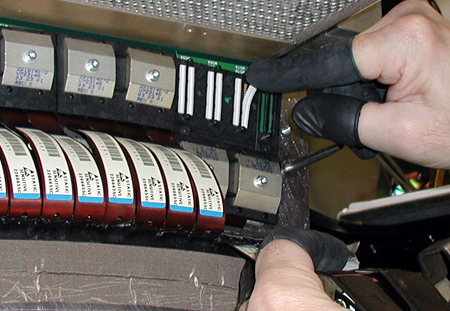

GEMS Proprietary Class: A
Direction 5117807-800, Rev# A
GEMS Proprietary Class: A |
| Required Persons | Preliminary Reqs | Procedure | Finalization |
|---|---|---|---|
| 1 |
| Item | Qty | Effectivity | Part# | Manufacturer | |
|---|---|---|---|---|---|
| Standard FE Tool Kit | 1 | - | - | - | |
| Item | Qty | Effectivity | Part# | Manufacturer |
|---|---|---|---|---|
| Alcohol pads | - | - | - |
| Item | Qty | Effectivity | Part# | Manufacturer | |
|---|---|---|---|---|---|
| Elastomer | As needed. | - | - | - | |
| Ensure that you are properly grounded by using the appropriate ESD wrist strap and cord connected to a good ground point in the Gantry. | |
No required conditions.
Remove gantry covers, shut OFF power, and lock the gantry in position (see Accessing the MDAS Assembly).
Remove the MDAS air plenum (see MDAS Air Plenum Removal & Installation).
Put on wrist strap and use good ESD precautions. Wear Finger Cots, and follow good Detector Handling practices.
Remove appropriate Flex housing outer cover by removing the housing Cover clamps.
A-side flexes must be removed to gain access to B-side flexes. To increase access space to the B-side, carefully bend the detached A-Side flex straight out towards the front of the gantry, so that it is perpendicular to the Detector window.
Each cover holds four (4) flex cables in place.
There are 2 clamps per cover. Each clamp is held by a 3mm captive hex cap screw. Use a 2.5mm Hex screwdriver bit to remove each clamp and cover.
Keep A-side and B-Side covers separate, as they are not interchangeable.
| Elastomers may become dislodged. Elastomers can potentially FALL OUT of housings, while flexes are being removed. Exercise caution. | |
Place an anti-static Detector Flex Boot on each exposed flex.
Carefully remove the questionable elastomer from its seating.
Insert the new elastomer so that the gold contact lines face outward.
Illustration 1: “A-Side” Elastomer Installation

Remove anti-static boots from flexes, and ensure that flex ends are clean. Clean with approved Alcohol pads, where required.
Replace flex covers (B-Side first), and torque clamps to 13 in-lb (1.47 N-m).
When complete, replace MDAS air plenum.
Remove rotational lock, restore power, and reassemble gantry covers.
No finalization required.